Pickup Point
Launch Service
From a web form redesign to a mobile-first product for entrepreneurs.
The brief
Improve the existing third-party web form and align it with OZON's new design guidelines.
A deeper problem emerged
The existing process was slowing down new pickup point launches.
50 fields in a web form that wasn't mobile-friendly.
53% drop-off rate, with another 16% of applications stalled.
3 weeks to several months to open a pickup point.
Scattered instructions, lengthy approvals, and preventable mistakes led to rework.
Every delay increased costs for entrepreneurs and slowed OZON's network expansion.
Research
I interviewed 3 entrepreneurs and 5 OZON account managers, conducted usability testing, and mapped the process using a Customer Journey Map and Service Blueprint.
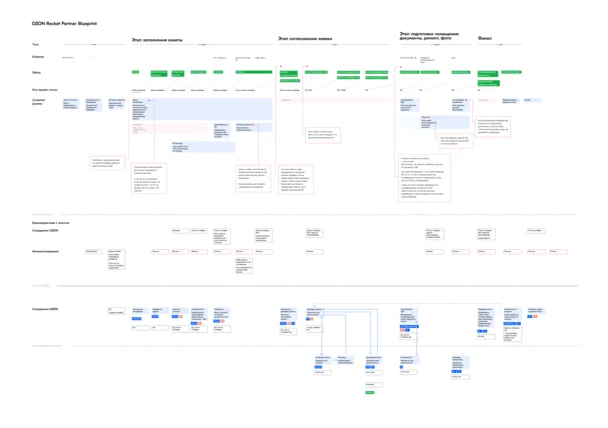
Key insight
Entrepreneurs searched for premises, took photos, and supervised renovations on site. They already had smartphones with cameras, yet the application process forced them to return to a computer.
Research also revealed difficulties with finding instructions, understanding application statuses, and communicating with managers.
For entrepreneurs: less waiting, fewer errors, lower costs and an earlier start.
For OZON: faster pickup point launches and network growth.
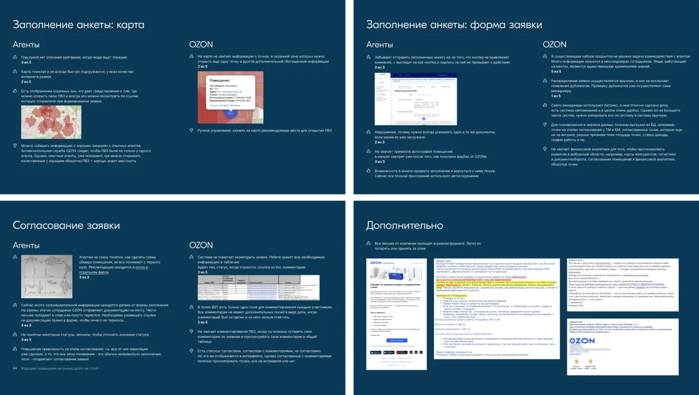
with problems and insights
Rethinking the approach
I presented the findings to the team and leadership and proposed a mobile-first solution instead of a conventional web form redesign.
We chose a native app to support on-site work, offline access, and a more seamless application process.
Results
- ~1.5 weeksTo open a pickup point, including renovations — down from 3 weeks to several months.
- 26% reduction in drop-offsBased on initial post-launch data. Stalled applications also decreased significantly.
- ~1.5 months soonerEntrepreneurs could start operating their pickup points and generating revenue.
Selected app screens
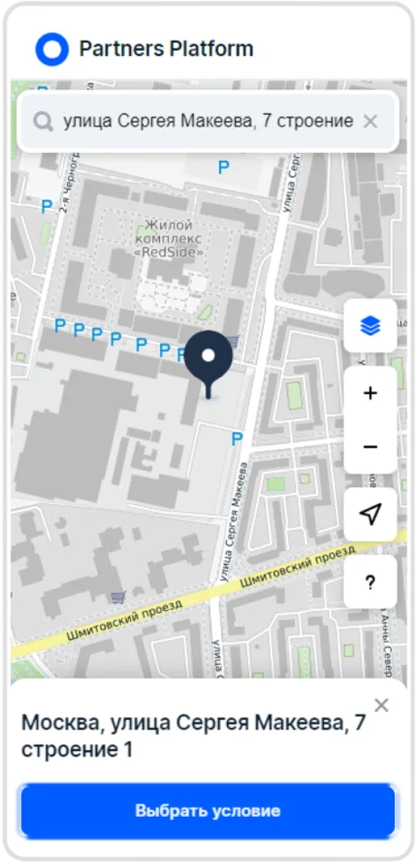
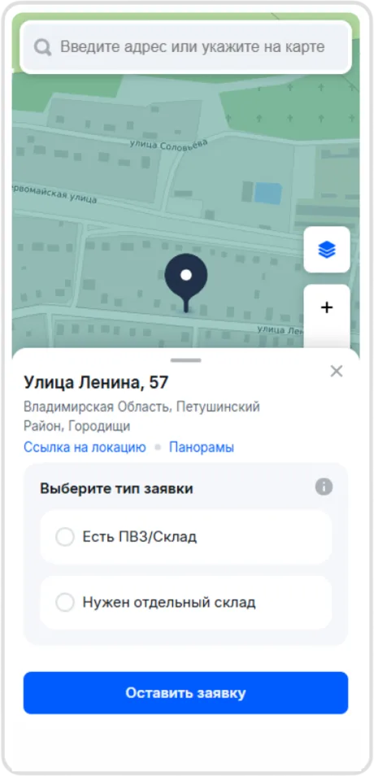
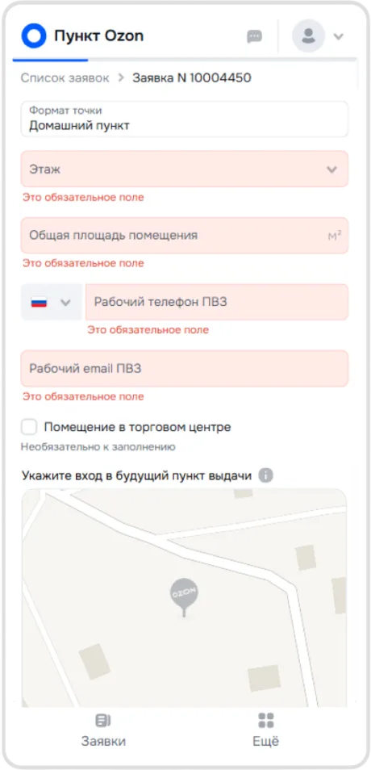
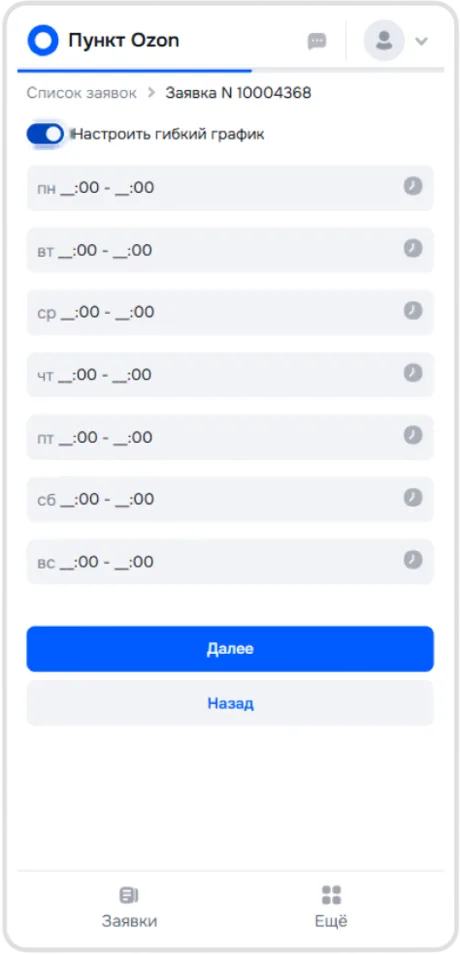
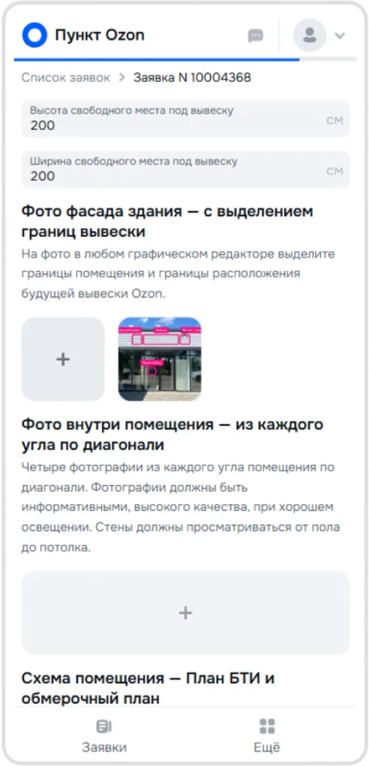
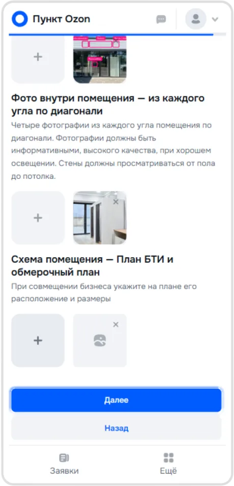
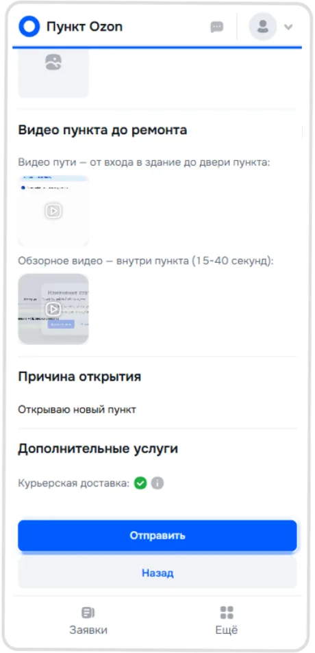
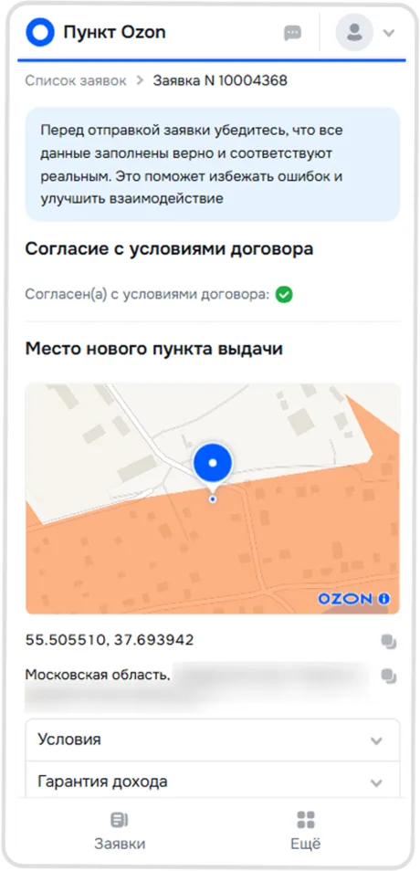
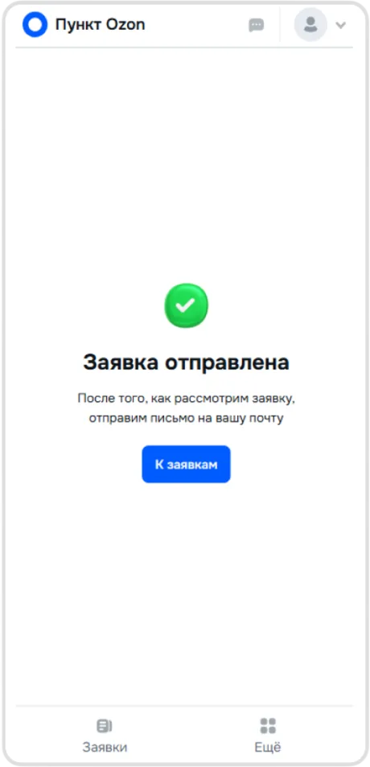
Key design decisions
-
Simplifying the application
I redesigned the original 50-field form, making non-essential fields optional while keeping valuable data collection in place.
We introduced a progress indicator, explained why additional information mattered to entrepreneurs, and allowed users to return to incomplete fields later.
-
Designing for real-world conditions
Entrepreneurs could take photos directly in the app, add documents even without an internet connection, and manage applications without returning to a computer.
Notifications kept them informed about changes in approval status.
-
Preventing errors before submission
Based on research findings and OZON employees' expertise, we embedded contextual guidance directly into the form.
Depending on the task, we used text instructions, sample images, and prefilled fields.
The goal was to prevent mistakes before submission rather than fix them during approval.
Takeaway
The project started as a UI redesign, but research revealed a much bigger opportunity.
By rethinking the entire user journey instead of improving individual screens, we created a product that reflected how entrepreneurs actually worked — and significantly shortened the time needed to open a pickup point.
Feedback
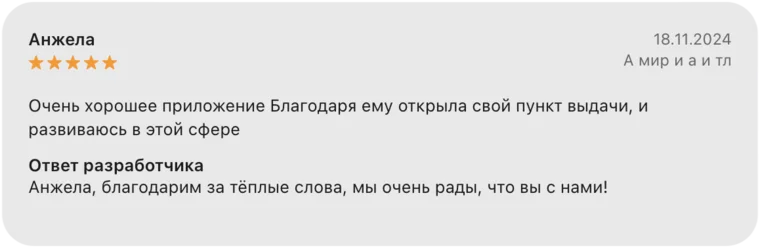
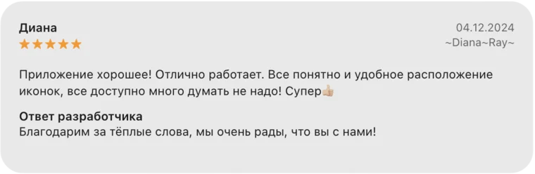
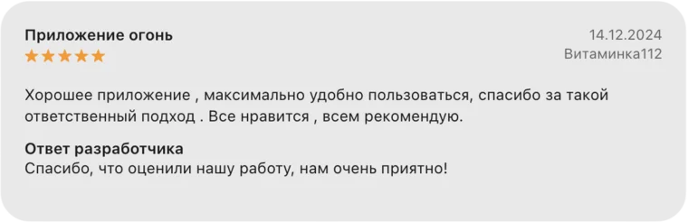
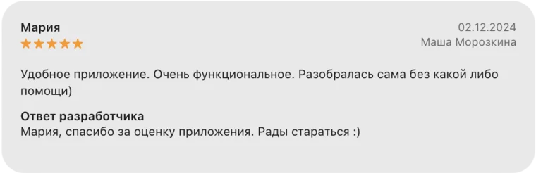
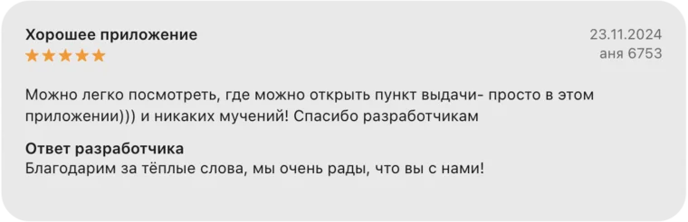